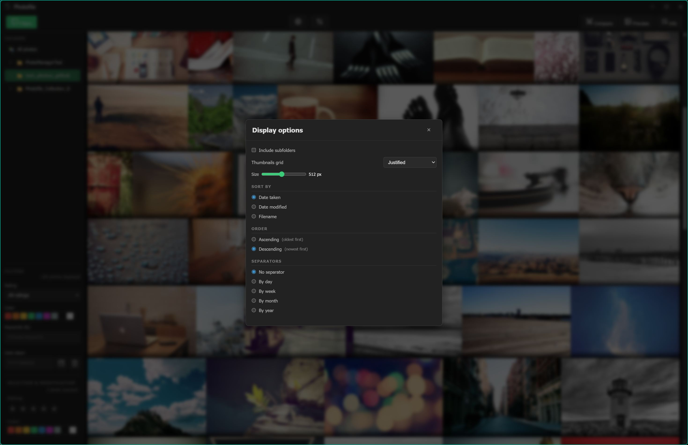
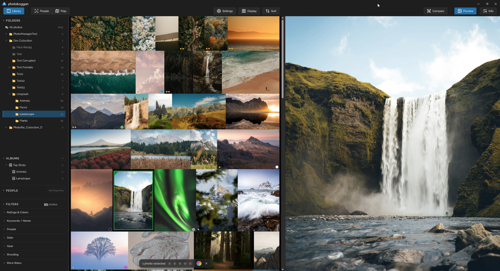
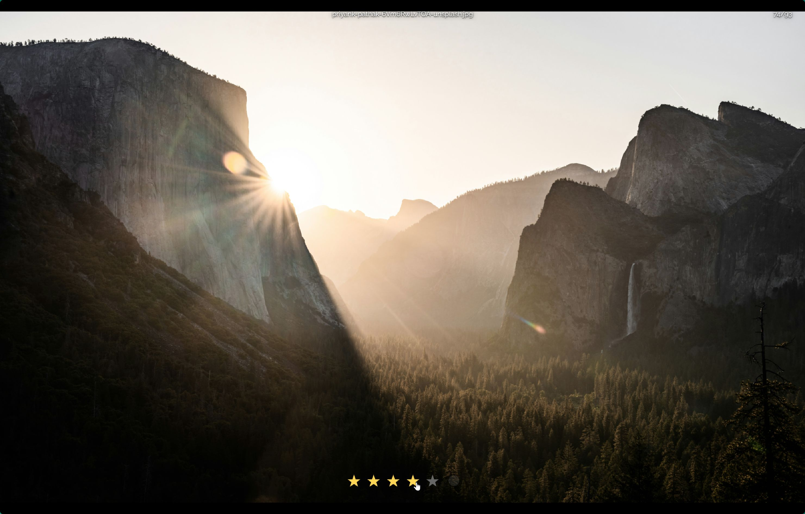
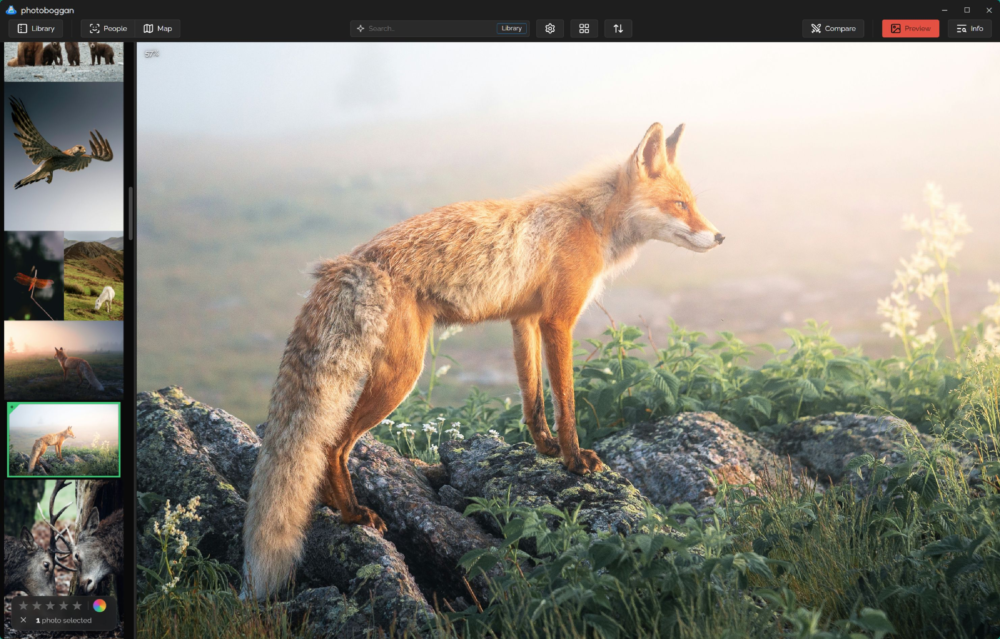
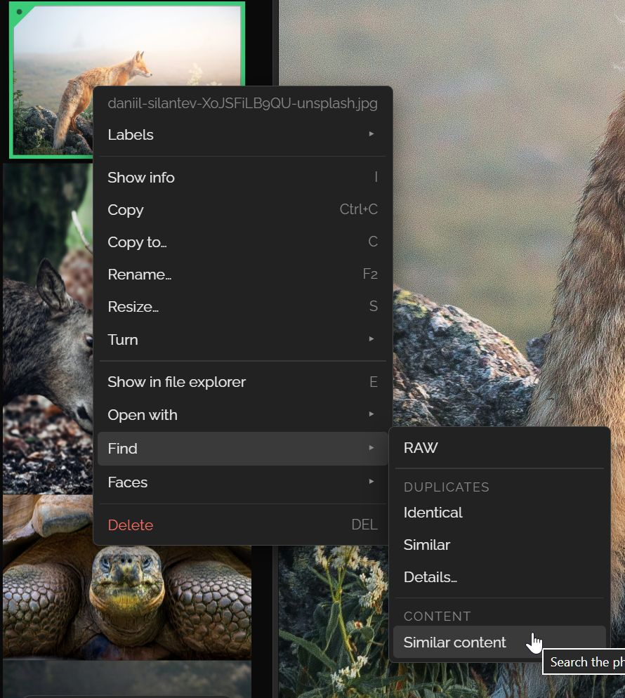
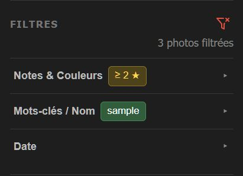
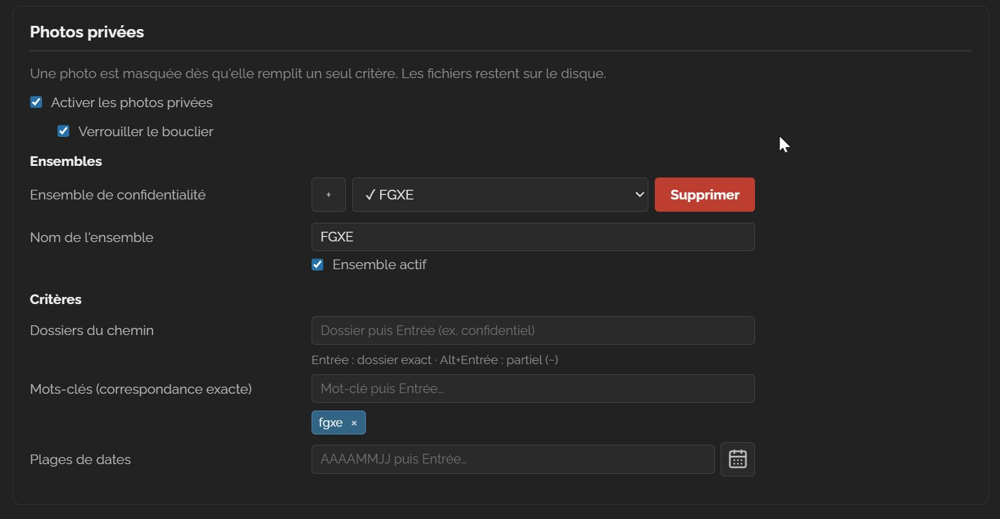
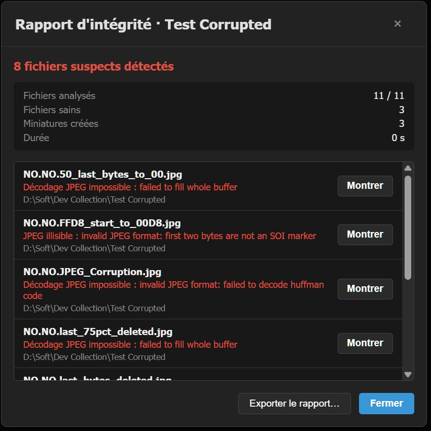

Browse at full speed
Grab and release to scroll. SQLite, virtual pagination of up to 50,000 thumbnails and a 256-folder cache keep large libraries fluid.
Organize once, then spend more time enjoying and exploring your collection. Smooth, photo-first and ready for libraries of 200,000+ images.
A silly name. A serious photo tool. · Free · Open source
Hover, tap or press Enter on a tile for details.
A flexible interface that keeps your photos in focus and useful controls close at hand.













For 25 years, I’ve been photographing as a hobbyist and dad. I built photoboggan to make time with a collection about enjoying and exploring photos, not repeating the same organizing chores.
Explore the project, get the latest release and see what’s new on GitHub.
Visit the GitHub repository